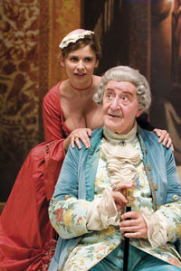

Un curioso accidente
di Carlo Goldoni
regia di Beppe Arena
con Mario Scaccia, Debora Caprioglio
e con Rosario Coppolino, Mario Patanè, Antonella Piccolo, Consuelo Ferrara e con la partecipazione di Edoardo Sala
|  |
“L'argomento di questa Commedia non è che un fatto vero, verissimo, accaduto, non ha molto tempo, in una città di Olanda. Mi fu raccontato da persone degne di fede in Venezia al Caffè della Sultana, nella Piazza di S. Marco, e le persone medesime mi hanno eccitato a formarne una Comica rappresentazione”.
Così scrive Goldoni in una nota introduttiva della commedia scritta nel 1760 ed ambientata in una nobile dimora d’Olanda ove l’amore tra un giovane ufficiale e la figlia del padrone di casa viene da quest’ultimo ostacolato (o forse è meglio dire negato) ed alla fine “risolto” dagli intrighi e dalle furberie femminili messe in opera dalla giovane innamorata. Al centro della vicenda l’equivoco che porterà il futuro padre della sposa ad aiutare il giovane militare, anche finanziariamente, a rapire l’amata per costringere il di lei genitore ad acconsentire al matrimonio, all’oscuro del fatto che i protagonisti del piano suggerito sarebbero stati proprio lui e la figlia; superfluo aggiungere che la storia d’amore tra i due scorre parallela alla vicenda sentimentale dei rispettivi servi, all’amore non corrisposto di un’altra lei ed al confronto iroso e grottesco tra due padri, l’uno nobile e l’altro borghese; finale con gl’immancabili matrimoni come in qualsiasi altra commedia che si rispetti.
Il gioco della seduzione ed il confronto tra i diversi modi di intendere ed affrontare l’amore (gli uomini vigliaccamente scappano, le donne coraggiosamente restano ed affrontano le difficoltà): questi i temi esenziali attorno ai quali si sviluppa il nostro “accidente”; Goldoni affronta subito l’argomento, nelle prime battute del testo, e lo svela: è sicuro delle proprie capacità drammaturgiche, alle quali non servono segreti da svelare nel finale per mantenere viva l’attenzione del lettore, ma soprattutto è consapevole che, una volta pagato il debito con la “morale” (e prima lo si fa e meglio è) allora si è liberi di mettere in scena il “verosimile” rendendo così credibile la verità, che spesso par davvero incredibile.
In questa libertà il grande commediografo veneziano costruisce il suo meccanismo, semplice e trasparente, privo di trame intricate e complesse, sapiente nella costruzione e perfetto d’equilibrio e di ritmo, squisito nella disposizione armonica delle parti, nello specchio delle simmetrie, nella dosatura e sfumatura degli effetti: il cerchio tracciato (naturalismo ed artificio) racchiude la vita, senza nasconderla e senza spegnerla: e la vita è colma di tenerezze, di sogni, di malinconie, di piccole pazzie e di grandi tracotanze, di cuore e di ragione, di tirannia ed amore.
(Beppe Arena)